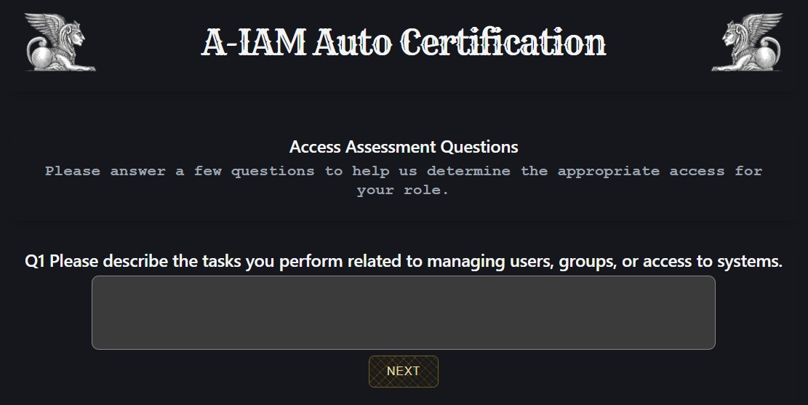
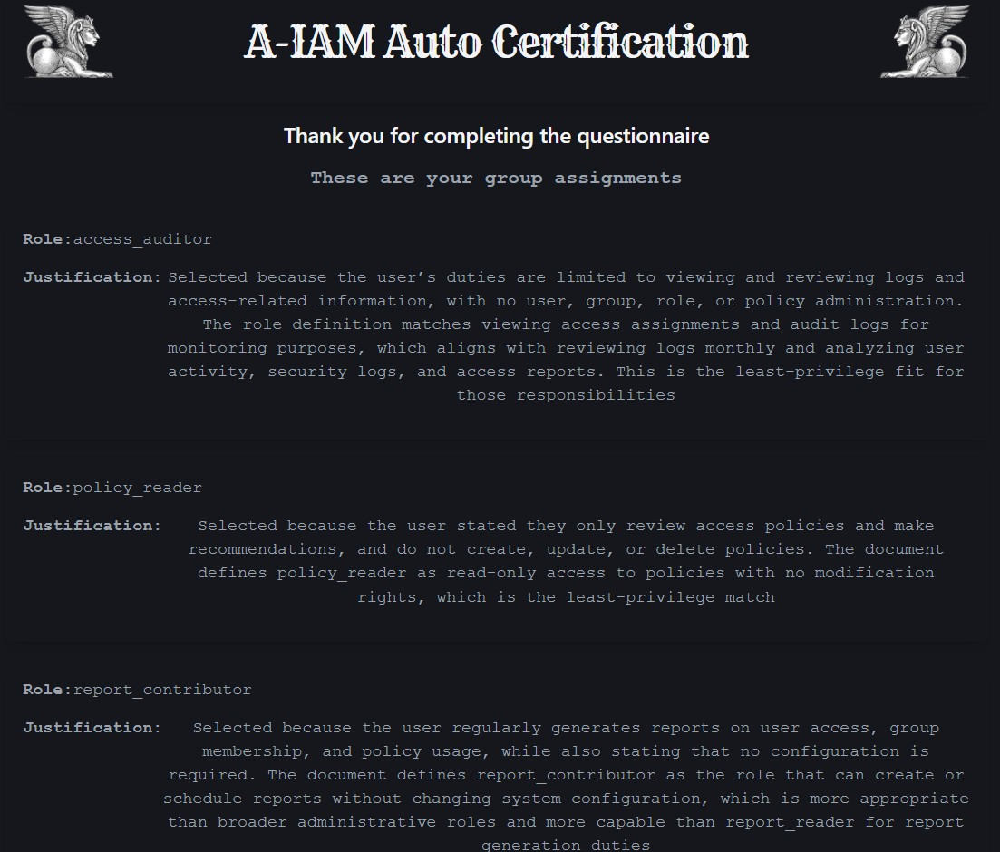

About
AI Certification is a system designed to automate the assignment of user access within an organisation by using artificial intelligence to determine the appropriate roles and permissions for each individual.
In identity and access management, certification refers to the process of reviewing and validating a user’s access rights to ensure they align with their job responsibilities. This is typically carried out during onboarding or periodic access reviews, where users are granted access to systems and resources based on their role.
However, traditional certification processes rely heavily on human approval. In practice, these approvals are often rushed or treated as routine administrative tasks. Authorisers may lack the time, context, or incentive to thoroughly evaluate each request, leading to over-provisioning of access and increased security risk.
AI Certification addresses this problem by analysing a user’s responsibilities and context to make informed, consistent access decisions. Instead of relying on manual judgement, the system evaluates inputs and recommends or assigns roles based on patterns and defined access models. This results in more accurate access control, reduced administrative overhead, and improved security posture.
This project demonstrates a proof of concept where role assignments are determined using AI.

How it Works
A policy document containing the organisational rules for role assignment is defined and uploaded to a prompt in OpenAI. The OpenAI prompt is set to ask the role assignments to be generated based on a set of questions that the user has answered.
The set of role assignments is returned by the AI prompt.
The Policy Document
This is the uploaded policy.
Architecture
Backend Server
The backend server hosts a REST API which is developed using the Python FAST API Framework.
The REST API has an endpoint which will accept an array of questions / answers and then sends these to the prompt to generate the list of roles. The AI reviews the access request based on the users responses and generates a list of role assignments.
Click here to view the REST API documentation.
Web App
The user interacts with a web based frontend which I have created using the
It will prompt the user with a series of questions that they answer and then press submit.
For demonstration purposes the list of role assignments is displayed on the page. In a real world situation this information would not be exposed to the user. It would be stored at the backend and sent to a line manager for approval in some form.
In the real world you'd have multiple stages of approval where AI makes the judgement and a human (line manager) approves the AI's selection.
Backend
Prompt
This is the prompt set up in OpenAI
You are an IAM Analyst for a technology company performing an access review.
The user is submitting responses to a questionnaire which is designed for assesmenet of the role assignments they are given. You are to assess the responses they have made to each of the questions and output a list of the roles they will be assigned to.
User Questions and Responses:
{{user_question_answers}}
You must make the judgment based on the rules given in the uploaded document and the role assignment set must only include the roles defined in the uploaded document.
Requirements:
- ONLY include roles defined in the document
- DO NOT invent new roles
- For each assigned role, provide a justification as to why the role has been selected
- Make the judgement based on least privilege
- Do not include markdown
- Output valid JSON only
Return ONLY valid JSON array in the following format:
[
{
"role_name": "string",
"justification" : "string"
},
]
The get-groups Endpoint
The backend serves the /get-groups endpoint. The code below calls the get_role_assignments function which makes the call to the prompt that is hosted in OpenAI.
@app.post("/get-groups", response_model = AiResponseSchema)
async def get_groups(user_answers : UserAnswerListSchema, api_key: str = Depends(get_api_key)):
question_data = [
{
"id": item.id,
"text": item.text,
"answer": item.answer
}
for item in user_answers.user_answers
]
ai_response = get_role_assignments(question_data)
#ai_response = [{'role_name': 'platform_administrator', 'justification': 'Selected because the user describes organization-wide administration of the central identity platform, full user lifecycle management, group oversight, role assignment, policy creation and enforcement, approval of privileged and administrative access, daily access operations, and management of role definitions. In the documented role set, platform_administrator is the only defined role with full system access to manage users, groups, roles, policies, configurations, and settings. Narrower roles such as user_administrator, groups_administrator, policy_administrator, role_assignment_manager, and access_request_approver would still not cover role definition management or full platform administration end-to-end. Assigning this single role is therefore the least-privilege fit available within the defined roles for the responsibilities stated. '}]
try:
role_list = AiResponseSchema.model_validate(ai_response)
except Exception as e:
print("Bad response from AI", e)
raise HTTPException(status_code=400,detail="Unable to generate role data")
return role_list
Click here to view the full code.
Frontend


The frontend is build using React. The user presses the start button to start the assessment and is then presented with a series of questions that they need to answer.
When they click on the submit button it will send their answers to the backend which will return a list of the roles the user is to be assigned to. For demonstration purposes this is displayed on the screen.
The React app has three page components.
- HomePage - for initiating the access review
- InterviewPage - for asking the user questions and submitting the response
- ResultsPage - for displaying the determined list of role assignments
This is the code for the InterviewPage which drives the access review. Click here to view the full code on GitHub.
You are an IAM Analyst for a technology company performing an access review.
The user is submitting responses to a questionnaire which is designed for assesmenet of the role assignments they are given. You are to assess the responses they have made to each of the questions and output a list of the roles they will be assigned to.
User Questions and Responses:
{{user_question_answers}}
You must make the judgment based on the rules given in the uploaded document and the role assignment set must only include the roles defined in the uploaded document.
Requirements:
- ONLY include roles defined in the document
- DO NOT invent new roles
- For each assigned role, provide a justification as to why the role has been selected
- Make the judgement based on least privilege
- Do not include markdown
- Output valid JSON only
Return ONLY valid JSON array in the following format:
[
{
"role_name": "string",
"justification" : "string"
},
]
The get-groups Endpoint
The backend serves the /get-groups endpoint. The code below calls the get_role_assignments function which makes the call to the prompt that is hosted in OpenAI.
import { useState } from "react";
import QuestionAnswer from "../components/QuestionAnswer";
import { getGroups } from "../network/network";
import LoadingWidget from "../components/LoadingWidget";
const InterviewPage = ({setPageName, questions, setResults}) => {
const [selectedQuestion,setSelectedQuestion] = useState(0);
const [questionAnswers, setQuestionAnswers] = useState([...questions]);
const [finish, setFinish] = useState(false);
const [loading,setLoading] = useState(false);
const setSelectedQuestionAndAnswer = (answer) => {
const nextQuestion = selectedQuestion + 1;
if(nextQuestion === questions.length) {
setFinish(true);
}
const newQuestionAnswers = [...questionAnswers];
newQuestionAnswers[selectedQuestion].answer = answer;
setQuestionAnswers(newQuestionAnswers);
setSelectedQuestion(nextQuestion);
}
const onComplete = async () => {
setLoading(true);
const payload = {
user_answers : questionAnswers
}
//send the data to the back end
try {
const res = await getGroups(payload);
setResults(res);
setPageName("results");
} catch(err) {
console.error("Error getting certification results", err)
}
setTimeout(() => {
setLoading(false);
},3000);
}
return(
<div >
<div className="panel">
<h2>Access Assessment Questions</h2>
<h3>Please answer a few questions to help us determine the appropriate access for your role.</h3>
</div>
<>
{
loading
? <LoadingWidget />
: <QuestionAnswer
question={questions[selectedQuestion]}
setSelectedQuestionAndAnswer={setSelectedQuestionAndAnswer}
finish={finish}
onComplete={onComplete}
/>
}
</>
</div>
)
}
export default InterviewPage;